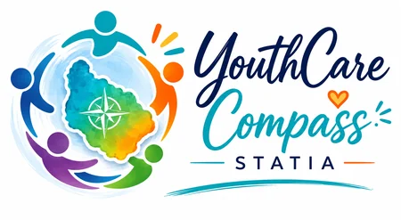

Youth
Professionals
Organisations
Find youth support on Statia
Choose the information that fits your situation.
FOR YOUNG PEOPLE
Youth
Help, information and opportunities for young people.
Continue
→
WORKING WITH YOUNG PEOPLE?
Professionals
Organisations, contacts and referral information.
Continue
→